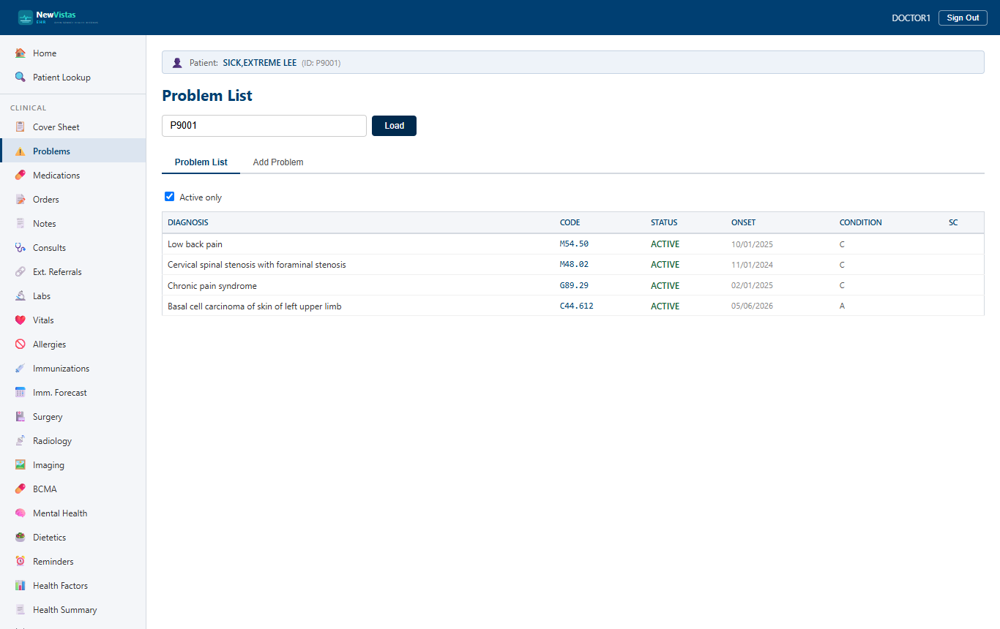

Problem List
Review and maintain the patient's active and inactive problems. Each problem can carry an ICD-10 code, onset date, and status.
Open the Problem List
- In the sidebar, under Clinical, click Problems (or go to
/problems). - Enter the patient ID in the lookup bar and click Load.
- The Problems tab lists active problems; switch tabs to record a new one.

Add a problem
- Click the Record Problem tab.
- Enter the problem text (e.g.
Type 2 diabetes mellitus). - Add the ICD-10 code if known (you can look it up under Reference › ICD-10 Codes).
- Set the onset date and status (Active / Inactive).
- Click Save. A green confirmation appears and the new problem shows in the list.
Consistent forms
Every data-entry screen in NewVistas uses the same form layout, the same
navy primary button, and the same green success / red error banners — so
once you've learned one screen, you've learned them all.
Where it shows up
Active problems also appear in the Cover Sheet
summary and feed clinical reminders and the diabetes registry.